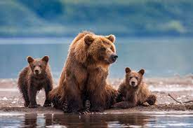

Los osos o úrsidos (Ursidae) son una familia de mamíferos omnívoros.1 Son animales de gran tamaño, generalmente omnívoros ya que, a pesar de su temible dentadura, comen frutos, raíces e insectos, además de carne. Con sus pesados cuerpos y sus poderosas mandíbulas, los osos se encuentran entre los mayores carnívoros que viven en la Tierra.
Mientras que el oso polar es mayoritariamente carnívoro, debido a la escasez de otras fuentes de alimento, y se alimenta casi únicamente de carne (focas), 2 el panda gigante se alimenta casi por completo de bambú. Las seis especies restantes son omnívoras con dietas variadas. Con la excepción de cortejar a individuos y madres con sus crías, los osos suelen ser animales solitarios. Pueden ser diurnos o nocturnos y tienen un excelente olfato. A pesar de su complexión pesada y su forma de andar torpe, son corredores, escaladores y nadadores expertos. Los osos utilizan refugios, como cuevas y troncos, como guaridas; la mayoría de las especies ocupan sus guaridas durante el invierno durante un largo período de hibernación, hasta 100 días.
* Los osos se caracterizan por su cabeza de gran tamaño, orejas pequeñas, redondeadas y erectas, ojos pequeños, un cuerpo pesado, robusto y una cola corta. Las patas son cortas y poderosas, con cinco dedos provistos de uñas fuertes y recurvadas garras.
*La hibernación es un común entre los osos. Sin embargo, los detalles específicos de la misma dependerán de la especie. Por ejemplo, en algunas especies de osos sólo las hembras hibernan, y sólo si están embarazadas. Su cría nacerá cuando están hibernando también. En otras especies todas, los machos y las hembras hibernan. El período de tiempo de hibernación para estos animales puede ser de unas pocas semanas a varios meses. Algunas especies viven en lugares más cálidos y no hibernan en absoluto.
*El diámetro del territorio de un oso se hará más grande a medida que envejece. En el primer par de años de vida será de unas dos millas o menos.
Los bosques y las montañas les ofrecen el alimento y refugio que necesitan para sobrevivir adecuadamente. Mientras que algunas especies de osos viven en las zonas más frías del mundo, algunos otros viven muy cerca del ecuador, en los lugares húmedos y con temperaturas cálidas.
*Más que carnívoros, casi todas las especies de oso son consideradas omnívoras. Se ha exaltado su imagen de eficaz y dominante cazador, pero su dieta no es solo de pescado. No obstante, se estima que el 90% de la dieta de este animal suele ser de origen vegetal. Por supuesto que también muestran gran interés en la comida consumida por seres humanos.
*Casi todas las caricaturas inspiradas en osos suelen ser muy injustas con su intelecto. En realidad, este animal tiene un cerebro muy grande comparado con su tamaño. Ellos son capaces de utilizar ciertas herramientas rudimentarias para jugar y cazar a sus presas. Los osos malayos pueden incluso imitar expresiones faciales de otros ejemplares.
*Los hábitats naturales del oso no suelen ofrecer depredadores en sus diversas variantes. En algunos casos, sus presas logran defenderse y herir de gravedad a estos grandes animales. El segundo enemigo potencial de los osos machos es otro ejemplar que sienta su territorialidad amenazada: el hombre es su principal depredador.
